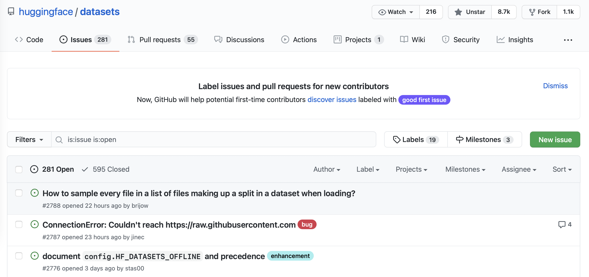

NLP课程（五）- Datasets库
转载自：https://huggingface.co/learn/nlp-course/zh-CN/
原中文文档有很多地方翻译的太敷衍了，因此才有此系列文章。
NLP课程（五）- Datasets库
在微调模型时有三个主要步骤：
- 从hugs Face Hub加载一个数据集。
- 使用Dataset.map()对数据进行预处理。
- 加载和计算指标(特征)。
数据集不在 Hub
| Data format | Loading script | Example |
|---|---|---|
| CSV & TSV | csv |
load_dataset("csv", data_files="my_file.csv") |
| Text files | text |
load_dataset("text", data_files="my_file.txt") |
| JSON & JSON Lines | json |
load_dataset("json", data_files="my_file.jsonl") |
| Pickled DataFrames | pandas |
load_dataset("pandas", data_files="my_dataframe.pkl") |
对于每种数据格式, 我们只需要使用 load_dataset() 函数, 使用 data_files 指定一个或多个文件的路径的参数
1.加载本地数据集
以SQuAD_it dataset为例，下载并且解压后可以得到SQuAD_it-train.json和SQuAD_it-test.json
使用load_dataset()函数来加载JSON文件, 我们只需要知道我们是在处理普通的 JSON(类似于嵌套字典)还是 JSON 行(行分隔的 JSON)。像许多问答数据集一样, SQuAD-it 使用嵌套格式,所有文本都存储在 data文件中。这意味着我们可以通过指定参数field来加载数据集,如下所示:
1 | from datasets import load_dataset |
默认情况下, 加载本地文件会创建一个带有train的DatasetDict 对象。 我们可以通过 squad_it_dataset查看:
1 | squad_it_dataset |
这向我们显示了与训练集相关联的行数和列名。我们可以通过索引到 train 查看示例，如下所示:
1 | squad_it_dataset["train"][0] # 训练集的2第一行 |
同时加载训练集与测试集
1 | data_files = {"train": "SQuAD_it-train.json", "test": "SQuAD_it-test.json"} |
load_dataset()函数的data_files参数非常灵活并且可以是单个文件路径、文件路径列表或将分割后的名称映射到文件路径的字典。您还可以根据Unix shell使用的规则对与指定模式匹配的文件进行全局定位（例如，您可以通过设置’data_files=“*.JSON”‘将目录中的所有JSON文件作为单个拆分进行全局定位）。有关更多详细信息，请参阅🤗Datasets 文档。
🤗 Datasets实际上支持输入文件的自动解压,所以我们可以跳过使用gzip,直接设置 data_files参数传递压缩文件:
1 | data_files = {"train": "SQuAD_it-train.json.gz", "test": "SQuAD_it-test.json.gz"} |
2.加载远程数据集
如果你在公司担任数据研究员或编码员,那么你要分析的数据集很有可能存储在某个远程服务器上。幸运的是,加载远程文件就像加载本地文件一样简单!我们没有提供本地文件的路径, 而是将load_dataset()的data_files参数指向存储远程文件的一个或多个URL。例如, 对于托管在 GitHub 上的 SQuAD-it 数据集, 我们可以将 data_files 指向 SQuAD_it-*.json.gz 的网址,如下所示:
1 | url = "https://github.com/crux82/squad-it/raw/master/" |
切片（数据清洗）
1.切片与切分数据
以加州大学欧文分校机器学习存储库的药物审查数据集为例，其中包含患者对各种药物的评论，以及正在治疗的病情和患者满意度的 10 星评级。
由于 TSV 只是使用制表符而不是逗号作为分隔符的 CSV 变体，我们可以使用加载csv文件的**load_dataset()**函数并指定分隔符 示例如下：
1 | from datasets import load_dataset |
在进行任何类型的数据分析时，一个好的做法是抽取一个小的随机样本，以快速了解您正在处理的数据类型。在🤗数据集中，我们可以通过链接 Dataset.shuffle() 和 Dataset.select() 共同来完成抽取：
（Dataset.shuffle() 和 **Dataset.select()**见https://huggingface.co/docs/datasets/v2.21.0/process）
1 | drug_sample = drug_dataset["train"].shuffle(seed=42).select(range(1000)) |
在**Dataset.shuffle()**选取了固定的随机数种子。 Dataset.select() 需要一个可迭代的索引，所以我们已经通过了 range(1000) 从随机打乱的数据集中选取前 1,000 个示例。从抽取的数据中，我们已经可以看到我们数据集的一些特点：
- Unnamed: 0这列看起来很像每个患者的匿名 ID。
- condition 这列包含有描述健康状况的标签。
- 评论长短不一，混合有 Python 行分隔符 (\r\n) 以及 HTML 字符代码，如**'**。
Dataset.unique()
为了验证Unnamed: 0 列存储的是患者 ID的猜想，我们可以使用 Dataset.unique() 函数来验证匿名ID 的数量是否与拆分后每部分中的行数匹配：
Dataset.unique()用于去重
1 | for split in drug_dataset.keys(): |
这似乎证实了我们的假设，所以让我们把 Unnamed: 0 列重命名为患者的id。我们可以使用 **DatasetDict.rename_column()**函数一次性重命名DatasetDict中共有的列：
1 | drug_dataset = drug_dataset.rename_column( |
使用 Dataset.map()标准化所有 condition 标签 .正如我们在第三章中所做的那样，我们可以定义一个简单的函数，可以将该函数应用于drug_dataset 拆分后每部分的所有行：
1 | def lowercase_condition(example): |
哦不，我们的map功能遇到了问题！从错误中我们可以推断出 condition 列存在 None , 不能转换为小写，因为它们不是字符串。让我们使用 Dataset.filter() 删除这些行 ，其工作方式类似于 Dataset.map() 。例如：
1 | def filter_nones(x): |
然后运行 drug_dataset.filter(filter_nones)
lambda 函数：
我们可以在一行中使用lambda 函数.在 Python 中，lambda 函数是您无需明确命名即可使用的微函数（匿名函数）。它们一般采用如下形式：
其中lambda 是 Python 的特殊关键字, arguments 是以逗号进行分隔的函数输入的列表/集合， expression 代表您希望执行的操作。例如，我们可以定义一个简单的 lambda 函数来对一个数字进行平方，如下所示：
我们需要将要输入给这个函数值括在括号中：
2
9类似地，我们可以通过用逗号分隔多个参数来定义 lambda 函数。例如，我们可以按如下方式计算三角形的面积：
2
16.0当您想定义小型、一次性使用的函数时，Lambda 函数非常方便
简单的映射和过滤操作
在🤗 Datasets 中，我们可以使用 lambda 函数来定义简单的映射和过滤操作，所以让我们使用这个技巧来消除我们数据集中的 None 条目：
1 | drug_dataset = drug_dataset.filter(lambda x: x["condition"] is not None) |
当 None 条目已删除，我们可以标准化我们的 condition 列：
1 | drug_dataset = drug_dataset.map(lowercase_condition) |
2.创建新的数据列
每当您处理客户评论时，一个好的做法是检查每个评论中的字数。评论可能只是一个词，比如“太棒了！”或包含数千字的完整文章，根据实际的情况，您需要以不同的方式处理这些极端情况。为了计算每条评论中的单词数，我们将使用基于空格分割每个文本的粗略方法。
- 按空格分割’review’这一列的句子，计算’review’中包含的词数并将其作为新的列。
- 删除包含少于 30 个单词的评论
- 评论中可能存在 HTML 字符代码使用 Python 的html模块取消这些字符的转义
按空格分割’review’这一列的句子，计算’review’中包含的词数并将其作为新的列。
让我们定义一个简单的函数来计算每条评论中的单词数：
Dataset.split()默认按空格进行分割，得到一个字符串列表
2
return {"review_length": len(example["review"].split())}与我们的
lowercase_condition()函数不同，compute_review_length()返回一个字典，其键与数据集中的列名之一不对应。 在这种情况下，当compute_review_length()传递给Dataset.map()时，它将应用于数据集中的所有行以创建新的review_length列：(Dataset.map()默认按行进行操作，且产生的新的列添加到表格列的末尾)
2
3
4
5
6
7
8
9
10
11
# Inspect the first training example
drug_dataset["train"][0] # 训练集第一行
{'patient_id': 206461,
'drugName': 'Valsartan',
'condition': 'left ventricular dysfunction',
'review': '"It has no side effect, I take it in combination of Bystolic 5 Mg and Fish Oil"',
'rating': 9.0,
'date': 'May 20, 2012',
'usefulCount': 27,
'review_length': 17}以使用 **Dataset.sort()**对这个新列进行排序，然后查看极端长度的评论的样子：
2
3
4
5
6
7
8
9
10
{'patient_id': [103488, 23627, 20558],
'drugName': ['Loestrin 21 1 / 20', 'Chlorzoxazone', 'Nucynta'],
'condition': ['birth control', 'muscle spasm', 'pain'],
'review': ['"Excellent."', '"useless"', '"ok"'],
'rating': [10.0, 1.0, 6.0],
'date': ['November 4, 2008', 'March 24, 2017', 'August 20, 2016'],
'usefulCount': [5, 2, 10],
'review_length': [1, 1, 1]}正如我们所猜想的那样，一些评论只包含一个词，虽然这对于情感分析来说可能没问题，但如果我们想要预测病情，这些评论可能并不适合。
删除包含少于 30 个单词的评论
让我们使用 Dataset.filter() 功能来删除包含少于 30 个单词的评论。与我们对 condition 列的处理相似，我们可以通过选取评论的长度高于此阈值来过滤掉非常短的评论：
2
3
4
print(drug_dataset.num_rows)
{'train': 138514, 'test': 46108}
评论中可能存在 HTML 字符代码使用 Python 的html模块取消这些字符的转义
如下所示：
2
3
4
5
text = "I'm a transformer called BERT"
html.unescape(text)
"I'm a transformer called BERT"我们将使用 Dataset.map() 对我们语料库中的所有 HTML 字符进行转义：
3.加速map方法
Dataset.map()函数时指定 batched=True。
Dataset.map() 方法有一个 batched 参数，如果设置为 True , map 函数将会分批执行所需要进行的操作（批量大小是可配置的，但默认为 1,000）。可以通过使用列表推导同时处理多个元素来加快速度。
当您在使用 **Dataset.map()**函数时指定 batched=True。该函数会接收一个包含数据集字段的字典，每个值都是一个列表，而不仅仅是单个值。Dataset.map() 的返回值应该是相同的：一个包含我们想要更新或添加到数据集中的字段的字典，字典的键是要添加的字段，字典的值是结果的列表。
例如，这是使用 batched=True对所有 HTML 字符进行转义的方法。
2
lambda x: {"review": [html.unescape(o) for o in x["review"]]}, batched=True)如果您运行此代码，您会看到此命令的执行速度比前一个命令快得多。这是因为列表推导式通常比在同一代码中用 for 循环执行相同的代码更快，并且我们还通过同时访问多个元素而不是一个一个来处理来提高处理的速度。
快速分词器：
例如，要使用快速标记器标记所有药物评论（AutoTokenizer 的默认设置是use_fast=True，也就是快速标记，可以设置use_fast=True来对比速度。他们能够实现这样的加速，因为在底层的标记化代码是在 Rust 中执行的，Rust 是一种可以轻松并行化执行的语言），我们可以使用这样的函数：
2
3
4
5
6
7
tokenizer = AutoTokenizer.from_pretrained("bert-base-cased")
def tokenize_function(examples):
return tokenizer(examples["review"], truncation=True)正如你在第三章所看到的，我们原本就可以将一个或多个示例传递给分词器，因此在batched=True是一个非必须的选项。在笔记本中，您可以在您要测量的代码行之前添加 %time来测试改行运行所消耗的时间：
多线程处理
Dataset.map() 也有一些自己的并行化能力。由于它们不受 Rust 的支持，因此慢速分词器的速度赶不上快速分词器，但它们仍然会更快一些（尤其是当您使用没有快速版本的分词器时）。要启用多处理，请在**Dataset.map()**时使用 num_proc 参数并指定要在调用中使用的进程数 ：
2
3
4
5
6
7
8
def slow_tokenize_function(examples):
return slow_tokenizer(examples["review"], truncation=True)
tokenized_dataset = drug_dataset.map(slow_tokenize_function, batched=True, num_proc=8)PS：除了 num_proc=8，我们的测试表明，使用batched=True而不带有num_proc参数的选项处理起来更快。通常，我们不建议将 Python 多线程处理用于具有batched=True功能的快速标记器 .
从单个示例的一列中提取多个特征
一个例子通常可以为我们的模型提供一组特征。在某些情况下，这些特征会储存在数据集的几个列，但在其他情况下（例如此处的例子和用于问答的数据），可以从单个示例的一列中提取多个特征
让我们来看看它是如何工作的！在这里，我们将标记化我们的示例并将最大截断长度设置128，但我们将要求标记器返回全部文本块，而不仅仅是第一个。这可以用 return_overflowing_tokens=True ：
2
3
4
5
6
7
return tokenizer(
examples["review"],
truncation=True,
max_length=128,
return_overflowing_tokens=True,
)在使用Dataset.map() 正式在整个数据集上开始处理之前让我们先在一个例子上测试一下：
2
3
4
[len(inp) for inp in result["input_ids"]]
[128, 49]我们在训练集中的第一个示例变成了两个特征，因为它被标记为超过我们指定的最大截断长度，因此结果被截成了两段：第一段长度为 128 ，第二段长度为 49 。现在让我们对所有元素执行此操作数据集！
2
3
ArrowInvalid: Column 1 named condition expected length 1463 but got length 1000不好了！它没有起作用！为什么呢？查看错误消息会给我们一个线索：列的长度不匹配，一列长度为 1,463，另一列长度为 1,000。1,000行的”review”给出了 1,463 行的新特征，导致和原本的1000行数据不匹配。
问题出在我们试图混合两个不同大小的不同数据集： drug_dataset 列将有一定数量的元素（我们错误中的 1,000），但是我们正在构建tokenized_dataset 将有更多的元素（错误消息中的 1,463）。这不适用于 Dataset ，因此我们需要从旧数据集中删除列或使它们的大小与新数据集中的大小相同。我们可以用 remove_columns 参数：
2
3
tokenize_and_split, batched=True, remove_columns=drug_dataset["train"].column_names
)现在这个过程没有错误。我们可以通过比较长度来检查新数据集的元素是否比原始数据集多得多：
2
(206772, 138514)
长度不匹配的问题
可以通过使旧列与新列的大小相同来处理长度不匹配的问题。
为此，我们可以使用 overflow_to_sample_mapping 字段，当我们设置return_overflowing_tokens=True .它为我们提供了特征到它所产生的样本的映射。使用这个，我们可以将原始数据集中的每个键关联到一个合适大小的值列表中，通过遍历所有的数据来生成新特性:
2
3
4
5
6
7
8
9
10
11
12
result = tokenizer(
examples["review"],
truncation=True,
max_length=128,
return_overflowing_tokens=True,
)
# Extract mapping between new and old indices
sample_map = result.pop("overflow_to_sample_mapping")
for key, values in examples.items():
result[key] = [values[i] for i in sample_map]
return result我们可以使用**Dataset.map()**来进行批处理，这样无需我们删除旧列：
2
3
4
5
6
7
8
9
10
11
12
tokenized_dataset
DatasetDict({
train: Dataset({
features: ['attention_mask', 'condition', 'date', 'drugName', 'input_ids', 'patient_id', 'rating', 'review', 'review_length', 'token_type_ids', 'usefulCount'],
num_rows: 206772
})
test: Dataset({
features: ['attention_mask', 'condition', 'date', 'drugName', 'input_ids', 'patient_id', 'rating', 'review', 'review_length', 'token_type_ids', 'usefulCount'],
num_rows: 68876
})
})我们获得了与以前相同数量的训练特征，但在这里我们保留了所有旧字段。如果您在使用模型计算之后需要它们进行一些后处理，您可能需要使用这种方法。
4.Datasets和DataFrames的相互转换
Dataset.set_format()
为了实现各种第三方库之间的转换，🤗 Datasets 提供了一个 Dataset.set_format() 功能。此功能可以通过仅更改输出格式的，轻松切换到另一种格式，而不会影响底层数据格式，即 Apache Arrow。格式化会在数据本身上进行。为了演示，让我们将数据集转换为 Pandas：
1 | drug_dataset.set_format("pandas") |
现在，当我们访问数据集的元素时，我们会得到一个 pandas.DataFrame 而不是字典：
1 | drug_dataset["train"][:3] |
| patient_id | drugName | condition | review | rating | date | usefulCount | review_length | |
|---|---|---|---|---|---|---|---|---|
| 0 | 95260 | Guanfacine | adhd | “My son is halfway through his fourth week of Intuniv…” | 8.0 | April 27, 2010 | 192 | 141 |
| 1 | 92703 | Lybrel | birth control | “I used to take another oral contraceptive, which had 21 pill cycle, and was very happy- very light periods, max 5 days, no other side effects…” | 5.0 | December 14, 2009 | 17 | 134 |
| 2 | 138000 | Ortho Evra | birth control | “This is my first time using any form of birth control…” | 8.0 | November 3, 2015 | 10 | 89 |
让我们创建一个 pandas.DataFrame 来选择 drug_dataset[train] 的所有元素：
1 | train_df = drug_dataset["train"][:] |
🚨 在底层，
Dataset.set_format()改变了数据集的__getitem__()dunder 方法的返回格式。 这意味着当我们想从"pandas"格式的Dataset中创建像train_df这样的新对象时，我们需要对整个数据集进行切片以获得pandas.DataFrame。无论输出格式如何，您都可以自己验证
drug_dataset["train"]的类型依然还是Dataset。
从这里我们可以使用我们想要的所有 Pandas 功能。例如，我们可以通过花式链接来计算 condition类之间的分布 ：
1 | frequencies = ( |
| condition | frequency | |
|---|---|---|
| 0 | birth control | 27655 |
| 1 | depression | 8023 |
| 2 | acne | 5209 |
| 3 | anxiety | 4991 |
| 4 | pain | 4744 |
一旦我们完成了 Pandas 分析，我们总是通过使用对象 **Dataset.from_pandas()**方法可以创建一个新的 Dataset 如下：
1 | from datasets import Dataset |
Dataset.reset_format()
重置格式
1 | drug_dataset.reset_format() |
5.创建验证集
尽管我们有一个可以用于评估的测试集，但在开发过程中保持测试集不变并创建一个单独的验证集是一个很好的做法。一旦您对模型在测试集上的表现感到满意，您就可以对验证集进行最终的检查。此过程有助于降低您过拟合测试集并部署在现实世界数据上失败的模型的风险。
Dataset.train_test_split()
Datasets提供了一个基于scikit-learn的经典方法Dataset.train_test_split() .让我们用它把我们的训练集分成 train 和 validation （为了可以复现，我们将设置seed的值为一个常量）：
1 | drug_dataset_clean = drug_dataset["train"].train_test_split(train_size=0.8, seed=42) # 将原训练集的0.8作为新训练集，0.2作为新测试集 |
1 | DatasetDict({ |
6.保存数据集
Datasets 提供了三个主要功能来以不同的格式保存您的数据集：
| 数据格式 | 对应的方法 |
|---|---|
| Arrow | Dataset.save_to_disk() |
| CSV | Dataset.to_csv() |
| JSON | Dataset.to_json() |
Arrow 格式
例如，让我们以 Arrow 格式保存我们清洗过的数据集：
这将创建一个具有以下结构的目录：
2
3
4
5
6
7
8
9
10
11
12
13
14
15
16
├── dataset_dict.json
├── test
│ ├── dataset.arrow
│ ├── dataset_info.json
│ └── state.json
├── train
│ ├── dataset.arrow
│ ├── dataset_info.json
│ ├── indices.arrow
│ └── state.json
└── validation
├── dataset.arrow
├── dataset_info.json
├── indices.arrow
└── state.json在那里我们可以看到每个部分.arrow表，以及一些元数据数据集信息.json和状态文件保存在一起.您可以将 Arrow 格式视为一个精美的列和行的表格，它针对构建处理和传输大型数据集的高性能应用程序进行了优化。
load_from_disk()
保存数据集后，我们可以使用 load_from_disk() 功能从磁盘读取数据如下：
2
3
4
5
6
7
8
9
10
11
12
13
14
15
16
17
18
19
drug_dataset_reloaded = load_from_disk("drug-reviews")
drug_dataset_reloaded
DatasetDict({
train: Dataset({
features: ['patient_id', 'drugName', 'condition', 'review', 'rating', 'date', 'usefulCount', 'review_length'],
num_rows: 110811
})
validation: Dataset({
features: ['patient_id', 'drugName', 'condition', 'review', 'rating', 'date', 'usefulCount', 'review_length'],
num_rows: 27703
})
test: Dataset({
features: ['patient_id', 'drugName', 'condition', 'review', 'rating', 'date', 'usefulCount', 'review_length'],
num_rows: 46108
})
})
CSV 和 JSON 格式
对于 CSV 和 JSON 格式，我们必须将每个部分存储为单独的文件。一种方法是迭代DatasetDict中的键和值 ：
2
dataset.to_json(f"drug-reviews-{split}.jsonl")这将保存每个拆分都是JSON的标准格式，其中数据集中的每一行都存储为一行 JSON。这是第一个示例：
2
{"patient_id":141780,"drugName":"Escitalopram","condition":"depression","review":"\"I seemed to experience the regular side effects of LEXAPRO, insomnia, low sex drive, sleepiness during the day. I am taking it at night because my doctor said if it made me tired to take it at night. I assumed it would and started out taking it at night. Strange dreams, some pleasant. I was diagnosed with fibromyalgia. Seems to be helping with the pain. Have had anxiety and depression in my family, and have tried quite a few other medications that haven't worked. Only have been on it for two weeks but feel more positive in my mind, want to accomplish more in my life. Hopefully the side effects will dwindle away, worth it to stick with it from hearing others responses. Great medication.\"","rating":9.0,"date":"May 29, 2011","usefulCount":10,"review_length":125}然后我们可以使用第二节学过的技术加载 JSON 文件如下：
2
3
4
5
6
"train": "drug-reviews-train.jsonl",
"validation": "drug-reviews-validation.jsonl",
"test": "drug-reviews-test.jsonl",
}
drug_dataset_reloaded = load_dataset("json", data_files=data_files)
Datasets用于大模型
Datasets 旨在克服加载极大数据集的存储限制。它通过将数据集作为内存映射文件来处理，并通过在语料库中流化条目来摆脱硬盘限制, 从而使你避免内存管理问题。
1.Pile
The Pile 是由EleutherAI创建的一个英语文本语料库, 用于训练大规模语言模型。它包含各种各样的数据集, 涵盖科学文章, GitHub 代码库以及过滤的Web文本。训练语料库在14 GB chunks, 并且你也可以下载几个单独的组件。 让我们先来看看 PubMed Abstracts 数据集, 它是PubMed上的1500万篇生物医学出版物的摘要的语料库。 数据集采用JSON行格式 并使用zstandard库进行压缩, 所以我们首先需要先安装zstandard库:
1 | !pip install zstandard |
接下来, 我们可以使用第二节中所学的加载远程数据集的方法加载数据集:
注意该数据集链接已经不能用了
1 | from datasets import load_dataset |
我们可以看到我们的数据集中有 15,518,009 行和 2 列 — 这是非常多的!
✎ 默认情况下, 🤗 Datasets 会自动解压加载数据集所需的文件。 如果你想保留硬盘空间, 你可以传递
DownloadConfig(delete_extracted=True)到download_config的load_dataset()参数. 有关更多详细信息, 请参阅文档](https://huggingface.co/docs/datasets/package_reference/builder_classes#datasets.DownloadConfig)。
让我们看看数据集的第一个元素的内容:
1 | pubmed_dataset[0] |
可以看到, 这看起来像是医学文章的摘要。 现在让我们看看我们使用了RAM的多少存储空间来加载数据集!
2.内存映射
在 Python 中测量内存使用情况的一个简单的方法是使用psutil库,它可以使用 pip安装, 如下所示:
1 | !pip install psutil |
它提供了一个 Process 类,这个类允许我们检查当前进程的内存使用情况, 如下所示:
1 | import psutil |
这里的rss属性是指常驻集的大小, 它是进程在RAM中占用的内存比例。 这个测量结果也包括了 Python 编译器和我们加载的库所使用的内存, 所以实际上用于加载数据集的内存会更小一些。为了比较, 让我们使用 dataset_size 属性看看数据集在磁盘上有多大。由于结果像之前一样用字节表示, 我们需要手动将其转换为GB:
1 | print(f"Number of files in dataset : {pubmed_dataset.dataset_size}") |
非常棒 — 尽管它将近20GB, 但我们能够占用很少的RAM空间加载和访问数据集!
✏️ 试试看! 从subsets中选择一个大于你的笔记本或者台式机的RAM大小的子集, 用 🤗 Datasets加载这个数据集, 并且测量RAM的使用量。 请注意, 要获得准确的测量结果, 你需要在另一个进程中执行这个操作。你可以在 the Pile paper的表一中找到每个子集解压后的大小。
如果你熟悉 Pandas, 这个结果可能会让人感到很意外。因为 Wes Kinney 的著名的经验法则 是你需要的RAM应该是数据集的大小的5倍到10倍。 那么 🤗 Datasets 是如何解决这个内存管理问题的呢? 🤗 Datasets 将每一个数据集看作一个内存映射文件, 它提供了RAM和文件系统存储之间的映射, 该映射允许库访问和操作数据集的元素, 而且无需将其完全加载到内存中。
内存映射文件也一个在多个进程之间共享, 这使得像 Dataset.map()之类的方法可以并行化, 并且无需移动或者赋值数据集。在底层, 这些功能都是由Apache Arrow内存格式和pyarrow库提供的支持, 使得数据加载和处理速度快如闪电。 (更多有关Apache Arrow的详细信息以及与Pandas的比较, 请查看Dejan Simic’s blog post.) 为了更清晰地看到这个过程, 让我们通过迭代PubMed Abstracts数据集中的所有元素来运行一个速度测试小程序:
1 | import timeit |
这里我们使用了 Python的 timeit 模块来测量执行 code_snippet所耗的时间。 你通常能以十分之几GB/s到几GB/s的速度迭代数据集。通过上述的方法就已经能够解决大多数大数据集加载的限制, 但是有时候你不得不使用一个很大的数据集, 它甚至都不能存储在笔记本电脑的硬盘上。例如, 如果我们尝试下载整个 Pile, 我们需要825GB的可用磁盘空间! 为了处理这种情况, 🤗 Datasets 提供了一个流式功能, 这个功能允许我们动态下载和访问元素, 并且不需要下载整个数据集。让我们来看看这个功能是如何工作的。
3.流数据集
要使用数据集流, 你只需要将 streaming=True 参数传递给 load_dataset() 函数。接下来, 让我们再次加载 PubMed Abstracts 数据集, 但是采用流模式:
1 | pubmed_dataset_streamed = load_dataset( |
与我们在本章其他地方遇到的熟悉的 Dataset 不同, streaming=True 返回的对象是一个 IterableDataset。 顾名思义, 要访问 IterableDataset , 我们需要迭代它。我们可以按照如下方式访问流式数据集的第一个元素:
1 | next(iter(pubmed_dataset_streamed)) |
IterableDataset.map()
如果您需要在训练期间标记流式数据集中的元素可以使用 IterableDataset.map()进行动态处理。该过程与我们在第三章中标记数据集的过程完全相同, 唯一的区别是输出是逐个返回的:
1 | from transformers import AutoTokenizer |
IterableDataset.shuffle()
💡 你可以传递 batched=True 来通过流式加速标记化, 如同我们在上一节看到的那样。它将逐批处理示例; 默认的批量大小为 1,000, 可以使用 batch_size 参数指定批量大小。
你还可以使用 IterableDataset.shuffle() 打乱流式数据集, 但与 Dataset.shuffle() 不同的是这只会打乱预定义 buffer_size 中的元素:
1 | shuffled_dataset = pubmed_dataset_streamed.shuffle(buffer_size=10_000, seed=42) |
IterableDataset.take() 和 IterableDataset.skip()
在这个示例中, 我们从缓冲区的前 10,000 个示例中随机选择了一个示例。一旦访问了一个示例, 它在缓冲区中的位置就会被语料库中的下一个示例填充 (即, 上述案例中的第 10,001个示例)。你还可以使用 IterableDataset.take() 和 IterableDataset.skip() 函数从流式数据集中选择元素, 它的作用类似于 Dataset.select()。例如, 要选择 PubMed Abstracts 数据集的前5个示例, 我们可以执行以下操作:
1 | dataset_head = pubmed_dataset_streamed.take(5) |
同样, 你可以使用 IterableDataset.skip() 函数将打乱的数据集拆分为训练集和验证集, 如下所示:
1 | # Skip the first 1,000 examples and include the rest in the training set |
interleave_datasets()
让我们用一个常见的任务来进行我们对数据集流的最后探索: 将多个数据集组合在一起创建一个心得语料库。 🤗 Datasets 提供了一个 interleave_datasets() 函数, 它将一个 IterableDataset 对象列表组合为单个的 IterableDataset, 其中新数据集的元素是通过在列表中的对象交替获得的(轮换各选一个）。当你试图组合大型数据集时, 这个函数特别有用, 让我们通过下面这个例子来试着组合 Pile的自由法律数据集,它是来自美国法院的51 GB的法律意见数据集:
1 | law_dataset_streamed = load_dataset( |
这个数据集足够大, 可以对大多数笔记本电脑的RAM有足够的压力, 但是我们已经能够毫不费力地加载和访问它! 现在我们使用 interleave_datasets() 函数加载来自 FreeLaw 和 PubMed Abstracts 的数据集:
1 | from itertools import islice |
这里我们使用了来自Python的 itertools 模块的 islice() 函数从合并的数据集中选择前两个示例, 并且我们可以看到它们实际上就是两个源数据集中的前两个示例拼在一起形成的:
传输整个Pile
最后, 如果你想流式传输整个825GB的 Pile, 你可以按照如下方式获取所有准备好的文件:
1 | base_url = "https://the-eye.eu/public/AI/pile/" |
✏️ 试试看! 使用像mc4 或者 oscar这样的大型 Common Crawl 语料库来创建一个流式多语言数据集, 该数据集代表你选择的国家/地区语言的口语比例。例如, 瑞士的四种民族语言分别是德语、法语、意大利语和罗曼什语, 因此你可以尝试根据根据口语比例对Oscar子集进行采用来创建瑞士语料库。
创建自己的数据集
在本节中，我们将向您展示如何创建一个GitHub issues的语料库，GitHub issues通常用于跟踪 GitHub 存储库中的错误或功能。该语料库可用于各种目的，包括：
- 探索关闭未解决的issue或拉取请求需要多长时间
- 训练一个多标签分类器可以根据issue的描述（例如，“错误”、“增强”或“issue”）用元数据标记issue
- 创建语义搜索引擎以查找与用户查询匹配的issue
GitHub issue可以理解为讨论区中的问题以及解答
1.获取数据集
您可以浏览 🤗 Datasets 中的所有issueIssues tab.如以下屏幕截图所示

一个issue，它包含一个标题、一个描述和一组表征该issue的标签。下面的屏幕截图显示了一个示例.

**方法1：**要下载所有存储库的issue，我们将使用GitHub REST API投票Issues endpoint.此节点返回一个 JSON 对象列表，每个对象包含大量字段，其中包括标题和描述以及有关issue状态的元数据等。
**方法2：**下载issue的一种便捷方式是通过 requests 库，这是用 Python 中发出 HTTP 请求的标准方式。您可以通过运行以下的代码来安装库：
1 | !pip install requests |
安装库后，您通过调用 requests.get() 功能来获取Issues节点。例如，您可以运行以下命令来获取第一页上的第一个Issues：
1 | import requests |
这 response 对象包含很多关于请求的有用信息，包括 HTTP 状态码：
1 | response.status_code |
其中一个状态码 200 表示请求成功（您可以在这里找到可能的 HTTP 状态代码列表）。然而，我们真正感兴趣的是有效的信息，由于我们知道我们的issues是 JSON 格式，让我们按如下方式查看所有的信息：
1 | response.json() |
哇，这是很多信息！我们可以看到有用的字段，例如 标题 , 内容 ， 参与的成员， issue的描述信息，以及打开issue的GitHub 用户的信息。
如 GitHub文档 中所述，未经身份验证的请求限制为每小时 60 个请求。虽然你可以增加 per_page 查询参数以减少您发出的请求数量，您仍然会遭到任何超过几千个issue的存储库的速率限制。因此，您应该关注 GitHub 的创建个人身份令牌，创建一个个人访问令牌这样您就可以将速率限制提高到每小时 5,000 个请求。获得令牌后，您可以将其包含在请求标头中：
2
3
headers = {"Authorization": f"token {GITHUB_TOKEN}"}⚠️ 不要与陌生人共享存在GITHUB令牌的笔记本。我们建议您在使用完后将GITHUB令牌删除，以避免意外泄漏此信息。一个更好的做法是，将令牌存储在.env文件中，并使用
python-dotenvlibrary 为您自动将其作为环境变量加载。0
下载所有issue
现在我们有了访问令牌，让我们创建一个可以从 GitHub 存储库下载所有issue的函数：
1 | import time |
现在我们可以调用 fetch_issues() 批量下载所有issue，避免超过GitHub每小时的请求数限制；结果将存储在repository_name-issues.jsonl文件，其中每一行都是一个 JSON 对象，代表一个issue。让我们使用这个函数从 🤗 Datasets中抓取所有issue：
1 | # Depending on your internet connection, this can take several minutes to run... |
下载issue后，我们可以使用我们 section 2新学会的方法在本地加载它们:
1 | issues_dataset = load_dataset("json", data_files="datasets-issues.jsonl", split="train") |
太好了，我们已经从头开始创建了我们的第一个数据集！但是为什么会有几千个issue，而🤗 Datasets存储库中的Issues 选项卡总共却只显示了大约 1,000 个issue🤔？如 GitHub 文档中所述，那是因为我们也下载了所有的拉取请求：
Git Hub的REST API v3认为每个pull请求都是一个issue，但并不是每个issue都是一个pull请求。因此，“Issues”节点可能在响应中同时返回issue和拉取请求。你可以通过pull_request 的 key来辨别pull请求。请注意，从“Issues”节点返回的pull请求的id将是一个issue id。
由于issue和pull request的内容有很大的不同，我们先做一些小的预处理，让我们能够区分它们。
2.清洗数据集
pull_request 列可用于区分issue和拉取请求。让我们随机挑选一些样本，看看有什么不同。我们将使用在第三节, 学习的方法，使用 Dataset.shuffle() 和 Dataset.select() 抽取一个随机样本，然后将 html_url 和 pull_request 列使用zip函数打包，以便我们可以比较各种 URL：
1 | sample = issues_dataset.shuffle(seed=666).select(range(3)) |
这里我们可以看到，每个pull请求都与各种url相关联，而普通issue只有一个None条目。我们可以使用这一点不同来创建一个新的is_pull_request列通过检查pull_request字段是否为None来区分它们:
1 | issues_dataset = issues_dataset.map( |
尽管我们可以通过删除或重命名某些列来进一步清理数据集，但在此阶段尽可能保持数据集“原始”状态通常是一个很好的做法，以便它可以在多个应用程序中轻松使用。在我们将数据集推送到 Hugging Face Hub 之前，让我们再添加一些缺少的数据：与每个issue和拉取请求相关的评论。我们接下来将添加它们——你猜对了——我们将依然使用GitHub REST API！
3.扩充数据集
拉取评论
GitHub REST API 提供了一个 评论节点 返回与issue编号相关的所有评论。让我们测试节点以查看它返回的内容：
1 | issue_number = 2792 |
我们可以看到注释存储在body字段中，所以让我们编写一个简单的函数，通过在response.json()中为每个元素挑选body内容来返回与某个issue相关的所有评论：
1 | def get_comments(issue_number): |
这看起来不错，所以让我们使用 Dataset.map() 方法在我们数据集中每个issue的添加一个comments列：
1 | # Depending on your internet connection, this can take a few minutes... |
4.上传数据集
现在我们有了增强的数据集，是时候将它推送到 Hub 以便我们可以与社区共享它了！ 上传数据集非常简单：就像 🤗 Transformers 中的模型和分词器一样，我们可以使用 push_to_hub() 方法来推送数据集。 为此，我们需要一个身份验证令牌，它可以通过首先使用 notebook_login() 函数登录到 Hugging Face Hub 来获得：
1 | from huggingface_hub import notebook_login |
这将创建一个小部件，您可以在其中输入您的用户名和密码， API 令牌将保存在~/.huggingface/令牌.如果您在终端中运行代码，则可以改为通过 CLI 登录：
1 | huggingface-cli login |
完成此操作后，我们可以通过运行下面的代码上传我们的数据集：
1 | issues_with_comments_dataset.push_to_hub("github-issues") |
之后，任何人都可以通过便捷地提供带有存储库 ID 作为 path 参数的 load_dataset() 来下载数据集：
1 | remote_dataset = load_dataset("lewtun/github-issues", split="train") |
您还可以使用一些 Git 魔法直接从终端将数据集上传到 Hugging Face Hub。有关如何执行此操作的详细信息，请参阅 🤗 Datasets guide 指南。
5.创建数据集卡片
使用 FAISS 进行语义搜索
1.使用embedding进行语义搜索
基于 Transformer 的语言模型会将文本中的每个标记转换为嵌入向量.事实证明，可以“汇集”各个嵌入向量来创建整个句子、段落或文档（在某些情况下）的向量表示。然后，通过计算每个嵌入之间的点积相似度（或其他一些相似度度量）并返回相似度最大的文档，这些嵌入可用于在语料库中找到相似的文档。在本节中，我们将使用嵌入来开发语义搜索引擎。与基于将查询中的关键字的传统方法相比，这些搜索引擎具有多种优势。
2.加载和准备数据集
我们需要做的第一件事是下载我们的 GitHub issues 数据集，所以让我们像往常那样使用 load_dataset()函数：
1 | from datasets import load_dataset |
这里我们在load_dataset()中使用了默认的训练集分割，所以它返回一个数据集而不是数据集字典。
过滤掉pull请求
第一项任务是过滤掉pull请求，因为这些请求很少用于回答用户提出的问题，而且会给我们的搜索引擎带来噪声。现在应该很熟悉了，我们可以使用dataset.filter()函数来排除数据集中的这些行。同时，让我们也过滤掉没有注释的行，因为这些行不会是用户提问的答案:
1 | issues_dataset = issues_dataset.filter( |
删除其余部分
我们可以看到我们的数据集中有很多列，其中大部分我们不需要构建我们的搜索引擎。从搜索的角度来看，信息量最大的列是 title , body ， 和 comments ，而 html_url 为我们提供了一个回到源问题的链接。让我们使用 Dataset.remove_columns() 删除其余部分的功能：
1 | columns = issues_dataset.column_names |
用问题的标题和正文来扩充每条评论
为了创建我们的嵌入，我们将用问题的标题和正文来扩充每条评论，因为这些字段通常包含有用的上下文信息。因为我们的 comments 列当前是每个问题的评论列表，我们需要“重新组合”列，以便每一条评论都包含一个 (html_url, title, body, comment) 元组。在 Pandas 中，我们可以使用 DataFrame.explode() 函数, 它为类似列表的列中的每个元素创建一个新行，同时复制所有其他列值。为了看到它的实际效果，让我们首先切换到 Pandas的DataFrame 格式：
1 | issues_dataset.set_format("pandas") |
如果我们检查这里的第一行 DataFrame 我们可以看到有四个评论与这个问题相关：
1 | df["comments"][0].tolist() |
我们希望这些评论中的每一条都得到一行。让我们检查是否是这种情况：
1 | comments_df = df.explode("comments", ignore_index=True) |
| html_url | title | comments | body | |
|---|---|---|---|---|
| 0 | https://github.com/huggingface/datasets/issues/2787 | ConnectionError: Couldn’t reach https://raw.githubusercontent.com | the bug code locate in ：\r\n if data_args.task_name is not None… | Hello,\r\nI am trying to run run_glue.py and it gives me this error… |
| 1 | https://github.com/huggingface/datasets/issues/2787 | ConnectionError: Couldn’t reach https://raw.githubusercontent.com | Hi @jinec,\r\n\r\nFrom time to time we get this kind of ConnectionError coming from the github.com website: https://raw.githubusercontent.com… |
Hello,\r\nI am trying to run run_glue.py and it gives me this error… |
| 2 | https://github.com/huggingface/datasets/issues/2787 | ConnectionError: Couldn’t reach https://raw.githubusercontent.com | cannot connect，even by Web browser，please check that there is some problems。 | Hello,\r\nI am trying to run run_glue.py and it gives me this error… |
| 3 | https://github.com/huggingface/datasets/issues/2787 | ConnectionError: Couldn’t reach https://raw.githubusercontent.com | I can access https://raw.githubusercontent.com/huggingface/datasets/1.7.0/datasets/glue/glue.py without problem… | Hello,\r\nI am trying to run run_glue.py and it gives me this error… |
太好了，我们可以看到评论成功被扩充， comments 是包含个人评论的列！现在我们已经完成了 Pandas要完成的部分功能，我们可以快速切换回 Dataset 通过加载 DataFrame 在内存中：
1 | from datasets import Dataset |
太好了，我们获取到了几千条的评论！
✏️ Try it out! 看看能不能不用pandas就可以完成列的扩充； 这有点棘手； 你可能会发现 🤗 Datasets 文档的 “Batch mapping” 对这个任务很有用。
创建一个新的comments_length列来存放每条评论的字数。
现在我们每行有一个评论，让我们创建一个新的 comments_length 列来存放每条评论的字数：
1 | comments_dataset = comments_dataset.map( |
过滤掉简短的评论
我们可以使用这个新列来过滤掉简短的评论，其中通常包括“cc @lewtun”或“谢谢！”之类与我们的搜索引擎无关的内容。虽然无法为过滤器选择的精确数字，但大约大于15 个单词似乎是一个不错的选择：
1 | comments_dataset = comments_dataset.filter(lambda x: x["comment_length"] > 15) |
将问题标题、描述和评论连接到一个新的 text 列
稍微清理了我们的数据集后，让我们将问题标题、描述和评论连接到一个新的 text 列。像往常一样，我们可以编写一个简单的函数，并将其传递给 **Dataset.map()**来做到这些 ：
1 | def concatenate_text(examples): |
我们终于准备好创建一些嵌入了！让我们来看看。
3.创建文本嵌入
我们在第二章学过，我们可以通过使用 AutoModel 类来完成词嵌入。我们需要做的就是选择一个合适的检查点来加载模型。幸运的是，有一个名为 sentence-transformers 专门用于创建词嵌入。如库中文档所述的，我们这次要实现的是非对称语义搜索，因为我们有一个简短的查询，我们希望在比如问题评论等更长的文档中找到其答案。通过查看模型概述表我们可以发现 multi-qa-mpnet-base-dot-v1 检查点在语义搜索方面具有最佳性能，因此我们将在我们的应用程序中使用它。我们还将使用相同的检查点加载标记器：
1 | from transformers import AutoTokenizer, AutoModel |
为了加快嵌入过程，将模型和输入放在 GPU 设备上，所以现在让我们这样做：
1 | import torch |
正如我们之前提到的，我们希望将 GitHub 问题语料库中的每个条目表示为单个向量，因此我们需要以某种方式“池化”或平均化我们的标记嵌入。一种流行的方法是在我们模型的输出上执行CLS 池化，我们只获取[CLS]令牌的最后一个隐藏状态。以下函数为我们提供了这样的方法：
1 | def cls_pooling(model_output): |
接下来，我们将创建一个辅助函数，该函数将标记文档列表，将tensor放在 GPU 上，然后提供给模型，最后对输出使用CLS 池化：
1 | def get_embeddings(text_list): |
我们可以通过在我们的语料库中输入第一个文本条目并检查输出维度来测试该函数是否有效：
1 | embedding = get_embeddings(comments_dataset["text"][0]) |
太好了，我们已经将语料库中的第一个条目转换为 768 维向量！我们可以用 Dataset.map() 应用我们的 get_embeddings() 函数到我们语料库中的每一行，所以让我们创建一个新的 embeddings 列如下：
1 | embeddings_dataset = comments_dataset.map( |
请注意，我们已经将嵌入转换为 NumPy 数组——这是因为当我们尝试使用 FAISS 索引它们时，🤗 Datasets需要这种格式，我们接下来会这样做。
4.使用 FAISS 进行高效的相似性搜索
指定我们要索引的数据集的哪一列
现在我们有了一个词嵌入数据集，我们需要一些方法来搜索它们。为此，我们将在 🤗 Datasets中使用一种特殊的数据结构，称为 FAISS指数.FAISS (short for Facebook AI Similarity Search) （Facebook AI Similarity Search 的缩写）是一个提供高效算法来快速搜索和聚类嵌入向量的库。FAISS 背后的基本思想是创建一个特殊的数据结构，称为指数。这允许人们找到哪些嵌入词与输入的词嵌入相似。在 🤗 Datasets中创建一个 FAISS 索引很简单——我们使用 Dataset.add_faiss_index() 函数并指定我们要索引的数据集的哪一列：
1 | embeddings_dataset.add_faiss_index(column="embeddings") |
问题embedding
现在，我们可以使用**Dataset.get_nearest_examples()**函数进行最近邻居查找。让我们通过首先嵌入一个问题来测试这一点，如下所示：
1 | question = "How can I load a dataset offline?" |
找到最相似的嵌入
就像文档一样，我们现在有一个 768 维向量表示查询，我们可以将其与整个语料库进行比较以找到最相似的嵌入：
1 | scores, samples = embeddings_dataset.get_nearest_examples( |
Dataset.get_nearest_examples() 函数返回一个分数元组，对查询和文档之间的相似度进行排序，以及一组最佳匹配的结果（这里是 5 个）。
收集到pandas.DataFrame
让我们把这些收集到一个 pandas.DataFrame 以便我们可以轻松地对它们进行排序：
1 | import pandas as pd |
查看查询与评论的匹配程度
现在我们可以遍历前几行来查看我们的查询与评论的匹配程度：
1 | for _, row in samples_df.iterrows(): |
import datasets
data = datasets.load_dataset(…)
data.save_to_disk(/YOUR/DATASET/DIR)
2
3
4
5
2. copy the dir from online to the offline machine
3. (offline machine)import datasets
data = datasets.load_from_disk(/SAVED/DATA/DIR)
2
3
4
5
6
7
8
9
10
11
12
13
14
15
16
17
18
19
20
21
22
23
24
25
26
27
28
29
30
31
HTH.
SCORE: 22.893993377685547
TITLE: Discussion using datasets in offline mode
URL: https://github.com/huggingface/datasets/issues/824
==================================================
COMMENT: here is my way to load a dataset offline, but it **requires** an online machine
1. (online machine)
\`\`\`
import datasets
data = datasets.load_dataset(...)
data.save_to_disk(/YOUR/DATASET/DIR)
\`\`\`
2. copy the dir from online to the offline machine
3. (offline machine)
\`\`\`
import datasets
data = datasets.load_from_disk(/SAVED/DATA/DIR)
\`\`\`
HTH.
SCORE: 22.406635284423828
TITLE: Discussion using datasets in offline mode
URL: https://github.com/huggingface/datasets/issues/824
==================================================
"""
我们的第二个搜索结果似乎与查询相符。